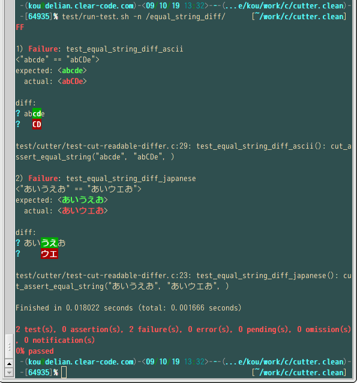
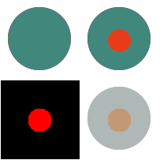

| Cutter Reference Manual |
|---|
Renamed an utility:
Added utitlities:
GCutEventLoop
GCutGLibEventLoop
Supported Debian GNU/Linux squeeze. [Suggested by Romuald Conty]
Supported Ubuntu Maverick Meerkat.
Supported Fedora 14.
cutter.m4: supported --config-cache.
cutter.m4: supported custom Makefile for --enable-coverage. (specify custome Makefile name to AC_CHECK_COVERAGE() argument)
Supported notify-send.
Renamed assertions:
Added an assertion:
Renamed an utility:
Added utilities:
Supported Ubuntu Lucid Lynx.
Supported configure result report on configure finish. [Suggested by Romain Tartière]
Supported libgoffice-0.8. (libgoffice-0.6 support was dropped.) [Suggested by Romain Tartière]
Supported lcov 1.9. #3056684 [Patch by Romain Tartière]
Supported full-width spaces in test description.
Supported sub-cutter command in PATH. [Patch by Romain Tartière]
Supported CentOS.
Improved test driven test support.
Bug in 1.1.0 fixes and improvements of GObject and sockaddr support.
NOTE: This release includes API incompatibility.
Add assertions for types defined in stdint.h [Yuto Hayamizu]
API CHANGE : Re-enable optional assertion message
Before:
cut_assert_equal_string("a", "b", "message");
After:
cut_assert_equal_string("a", "b", cut_message("message"));
Add cut_message()
Make cut_set_message() obsolete
Make cut_set_message_va_list() obsolete
Make cut_keep_message() obsolete
Add supported types by cppcut_assert_equal()
Support test definition detection in namespace
Make CPPCUT_BEGIN_TEST_DECLS obsolete
Make CPPCUT_END_TEST_DECLS obsolete
Support optional assertion message
Add cppcut_message()
Add a function to Assertion Utilities for GHashTable :
Inspect hash table after sorted by key
Support colorized diff: 
Add --stop-before-test option that sets breakpoint before each test [Suggested by Yoshinori K. Okuji]
Add cut-diff command
Support unified diff
Support C++: CppCutter
Support libsoup:
HTTP client:
HTTP server:
Assertions:
Add an function to Assertion Utilities for GHashTable :
Add mroonga to project list that use Cutter
Support rpm package for Fedora
Support deb package for Debian
Support deb package for Ubuntu
Support lcov 1.7
Document:
Provide Version Information
Support GBoxed type test data
Display test name on crash (if available)
Add shared library parser
Support ELF (Linux/*BSD), PE (Windows), Mach-O (Mac OS X)
Don't use BFD by default
Use ImageHlp instead of BFD on Windows
Document:
Add Cygwin related notes to tutorial [Yamakawa Hiroshi]
Add test utilities:
Add assertions:
cut_assert_not_equal_double() [gunyara-kun]
cut_assert_not_equal_int() [gunyara-kun]
cut_assert_not_equal_uint() [gunyara-kun]
cut_assert_not_equal_memory() [gunyara-kun]
cut_assert_not_equal_size() [gunyara-kun]
cut_assert_not_equal_string() [gunyara-kun]
gcut_assert_not_equal_pid() [gunyara-kun]
Compatibility:
Make fixture functions without "cut_" prefix deprecated. [gunyara-kun]
startup() -> cut_startup()
shutdown() -> cut_shutdown()
Bug fixes:
Fix a typo in tutorial: [UNNO Hideyuki]
Fix file descriptor redirection: [UNNO Hideyuki]
Add --disable-signal-handling option
Improve backtrace detection:
Improve user message related API for assertions:
Obsolete optional message
for supporting non-GCC compilers
Add APIs to set user message independently of assertions:
Add API to use the same message with assertions:
Improve data driven test support:
Add "cut_" prefix to fixture functions:
Add test utilities:
Add assertions:
Support max number of threads ran concurrently:
Add --max-threads option
For sub process:
Support GdkPixbuf:
Image comparison
Image diff
expected:
actual:
diff: 
Improve debug support:
Add --keep-opening-modules option
Keep opening modules for resolving symbols on debugging
Show test result on SIGABORT like on SIGSEGV
--name option support iterated test
'but was:' -> 'actual:'
Add test utilities:
Add assertions:
Improve user defined assertion writing support:
Support backtrace
Bug fixes:
Fix memory leak (Daijiro MORI)
Fix a bug that test result is ignored in setup()/teardown()
Option:
Add --stream-log-dir option that is for logging test result history
Add --fatal-failures option that test is aborted on failure (for cooperation with debugger)
Output:
Support folded diff
Output newline into long summary (".", "F", ...)
Add cut_set_attributes() to set attributes
Support test on multi-process
Support data driven test on multi-thread
Add assertions:
Add utilities:
Fix:
Fix a build bug on no GOffice environment. (Reported by Kazumasa Matsunaga)
Experimental:
Add --analyzer mode that cutter analyzes test result log.
Support Data-Driven Testing:
Add assertions:
Rename assertions:
Rename features that requires GLib support to 'gcut_XXX' from 'cut_XXX'. 'cut_XXX' can be still used but they are deprecated. See Assertions with GLib support for more details.
Add utilities:
cut_append_diff() : appends diff to a string.
gcut_list_string_new() / gcut_list_string_free() : helps creating a list of strings.
gcut_take_error() : takes ownership of GError * to Cutter.
gcut_take_list() : takes ownership of GList * to Cutter.
gcut_take_object() : takes ownership of GObject * to Cutter.
Support fixture data
cut_set_fixture_data_dir()
cut_get_fixture_data_string()
cut_build_fixture_data_path()
Add a utility
cut_remove_path()
Add assertions
cut_assert_equal_fixture_data_string()
cut_assert_path_not_exist()
cut_assert_remove_path()
cut_error_errno()
Experimental:
Windows support
Improve AC_CHECK_COVERAGE
Document:
Fix: Require GLib >= 2.16
Experimental:
Support GStreamer:
Transport test result to remote machine and so on
Support warmup()/cooldown()
Add assertions:
cut_assert_equal_pointer()
cut_assert_g_error()
cut_assert_match()
cut_assert_match_with_free()
Add --exclude-file option that specifies excluded files from test targets
Add --exclude-dir option that specifies excluded directories from test targets
Add --without-cutter to cutter.m4 (configure option)
Experimental:
Implement Cutter protocol (CutXMLStreamer and CutStreamParser)
Add cut_take_g_error()
Support Mac OS X
Add assertions.
cut_assert_equal_string_array_with_free()
cut_assert_true()
cut_assert_false()
cut_assert_file_exist()
Add AC_CHECK_GCUTTER
Experimental: Support GObject:
cut_take_g_object()
LGPL2 -> LGPL3
Add assertions.
cut_assert_equal_g_list_int()
cut_assert_equal_g_list_string()
cut_assert_errno()
Support omission: cut_omit()
Support startup/shutdown hooks that are ran on before test case start and end.
Support diff.
Support gcov.
Experimental: Support fork:
cut_fork()
cut_wait_process()
cut_fork_get_stdout_message()
cut_fork_get_stderr_message()
Fixed packaging failure.
Fixed --help-all.
Added a document for XML format reported by Cutter.
Added --xml-report option for reporting test result as XML.
Added --test-case-order option for sorting test case by name.
Added --version option for outputting Cutter version.
Added --disable-bfd option to configure.